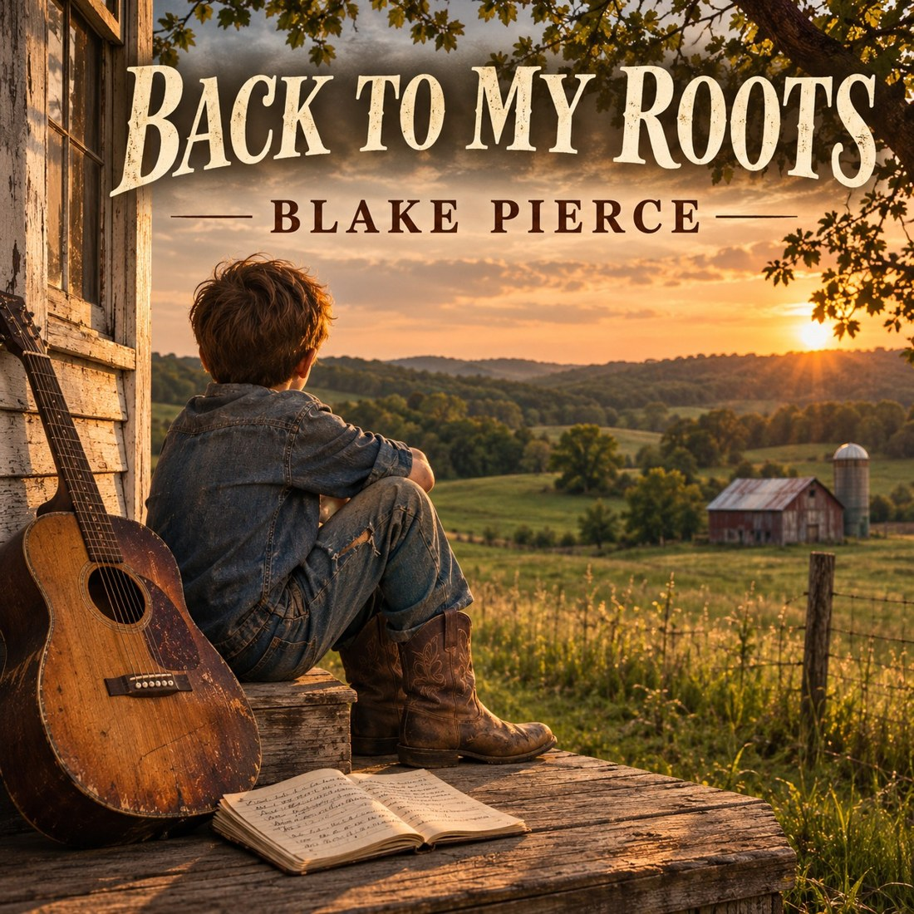

BLAKE PIERCE · A NEW CHAPTER
Back to
My Roots.
A little closer to home.
A little closer to me.
Acoustic strings. Missouri memories. The words I’ve carried all my life, finally finding their way home.

01 / WHERE IT ALL BEGAN
Before the songs,
there was a
little boy dreaming.
My first solo was in elementary school. Mrs. Tidwell picked me to sing “I’m Getting Nothing for Christmas.” I didn’t know it then, but something had begun.
I grew up with thrift-store clothes, hand-me-downs, and an imagination that could take me anywhere. My daddy couldn’t read or write. Words became friends to me, and I’ve spent my life finding things to make with them.
“Back to My Roots” brings me back to that beginning. My rural Missouri way of talking. The little boy in cowboy boots. The family, the memories, and the dreams that never quite let go.
I’m finding myself in a more intimate acoustic sound—giving the words room to breathe and the stories room to be felt.
More of my story ↗FROM THE NEW SINGLE
“A dreamer from the very start
A little body with a big ol’ heart”
BACK TO MY ROOTS — BLAKE PIERCE
02 / WHILE YOU’RE HERE
There’s a story
waiting for you.
The next chapter is coming.
Spend a little time with the music already here.
CURRENTLY STREAMING
Spotify’s My Diary
Family, home, love, loss, and the working day. These are pieces of my life, shared one song at a time.
Listen on Spotify“Back to My Roots” is an upcoming single and is not part of this album. Release details will be shared here when available.
Explore the current album ↗Open Spotify to listen, save songs, and follow Blake Pierce.
A NOTE ABOUT THE MUSIC
My life. My words.
My creative direction.
These songs come from my life, memories, and imagination. I write the lyrics and use AI tools to help bring them to life through vocals and instrumentation. My goal is to shape each song into something personal and distinctive, with natural vocals, emotion, and a sound that feels like me.
— Blake Pierce, BTP RecordsFROM MY CORNER OF MISSOURI, THANK YOU.